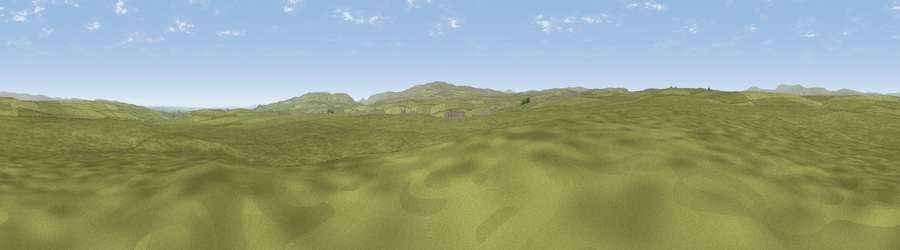

Glasgow How
#23658 in England · top 64% of its area beats it · —Where it is
The exact computed spot (NY 91989 13622). Click the marker for map links.
The view, rendered

A 360° render of this exact spot computed from the terrain model, tree cover and land cover — summer colours, afternoon light, calibrated against photographs of famous viewpoints. Real trees, hedges and buildings will differ in detail.
The panorama
Grey silhouette: terrain skyline in each direction (720 bearings, Earth curvature and refraction included). Dashed green: skyline with trees (+15 m) and buildings (+8 m) as obstacles. Blue strip: how far the ground is visible on each bearing.
Where the view opens
Wedge length = distance to the farthest visible ground on that bearing (vegetation-aware). Rings at 10, 25 and 50 km.
What fills the view
99% grassland
Angular shares of the visible panorama (visual magnitude), not map area. Landscape diversity 0.02 (0–1 Shannon).
Key numbers
More beautiful places nearby
The staircase of upgrades: each row has a higher view potential than everything closer. Driving times are estimates from straight-line distance, calibrated against real road routing — check an actual route before setting out.
| Place | Direction | Drive | Score |
|---|---|---|---|
| Sun Dodd | E · 2 km | ~6 min | 53.1 |
| Viewpoint c10340_7817 | NNW · 4 km | ~8 min | 64.9 |
| Viewpoint c10288_7742 | W · 5 km | ~11 min | 70.3 |
| Viewpoint c10212_7709 | WSW · 7 km | ~15 min | 73.4 |
| Viewpoint near Barningham | ESE · 13 km | ~24 min | 74.1 |
| Viewpoint near Eggleston | NE · 14 km | ~26 min | 76.0 |
| Viewpoint c10024_7603 | SW · 17 km | ~30 min | 76.9 |
| Great Dun Fell | NW · 28 km | ~44 min | 77.8 |
54.51783, -2.12526 · source: osm peak · position refined by local search. Computed location — check access rights before visiting.